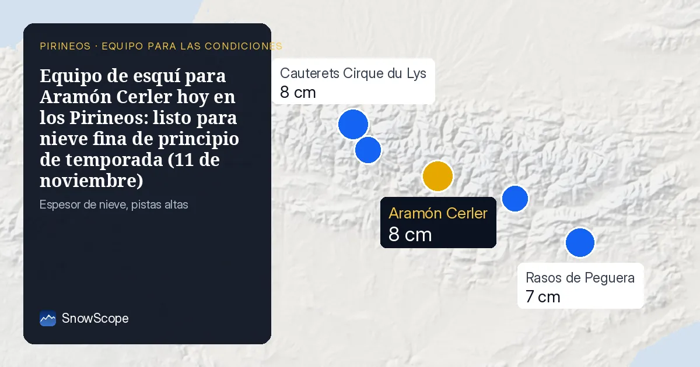

Equipo de esquí para Aramón Cerler hoy en los Pirineos: listo para nieve fina de principio de temporada (11 de noviembre)
La nieve de principios de temporada en los Pirineos hoy es escasa y frágil, con aire cálido convirtiendo lo poco que hay en costra. Te mostramos qué ponerte y qué empacar en cada estación, dónde encontrar las mejores condiciones y cuándo el nivel de congelación amenaza lluvia.
Consulta la previsión de nieve en tiempo real de Aramón Cerler en la app SnowScopeEspesor de nieve, alertas de nieve polvo y mapa 3D, gratis.
Qué te espera hoy
Las pistas altas tienen entre 5 y 8 cm de nieve en las cinco estaciones más grandes. Aramón Cerler tiene 8 cm, Cauterets Cirque du Lys tiene 8 cm, Rasos de Peguera tiene 7 cm, Estació d'esquí de Port-Ainé tiene 5 cm y Gavarnie-Gèdre tiene 5 cm. Esta cobertura tan fina significa que rocas, tocones y tierra dura están muy cerca de la superficie.
Aire cálido sube hacia las montañas hoy y mañana. En Aramón Cerler el nivel de congelación llega a 3 270 m por la tarde del 12 de noviembre, muy por encima de la cota más alta de 2 618 m. En Rasos de Peguera sube a 3 480 m. Cuando el aire por encima de las pistas más altas se mantiene cálido durante el día, el sol y el aire funden la superficie; por la noche se convierte en costra. Cauterets Cirque du Lys se mantiene un poco más frío, con el nivel de congelación llegando solo a 3 160 m mañana.
| Estación | Espesor de nieve | Nieve nueva, 72 h | Previsto, próximos días | Cota máx. |
|---|---|---|---|---|
| Aramón Cerler | 8 cm | 3 cm | 6 cm | 2618 m |
| Cauterets Cirque du Lys | 8 cm | 1 cm | 18 cm | 2420 m |
| Rasos de Peguera | 7 cm | 0 cm | 0 cm | 2036 m |
| Estació d'esquí de Port-Ainé | 5 cm | 0 cm | 1 cm | 2424 m |
| Gavarnie-Gèdre | 5 cm | 0 cm | 11 cm | 2283 m |

Equipo que funciona ahora
Trae esquís viejos o de alquiler. La nieve escasa no oculta obstáculos, así que sacrifica tus mejores esquís para protegerlos. Alquila en una tienda local si los tuyos no están contigo; también los ajustarán y afilarán los cantos para las condiciones de hoy.
Lleva una chaqueta impermeable y capas base que se sequen rápido. La nieve de primera hora puede ser blanda, pero a media mañana la nieve mojada se pega a tu ropa y te enfría. Los guantes impermeables importan más que el aislamiento grueso. Un casco es esencial: la nieve escasa significa rocas expuestas, y la costra helada tras ciclos de descongelación es dura.
Lleva herramientas para afinar cantos o visita una tienda. Los cantos afilados muerden la costra; los cantos romos deslizan. Si esquías fuera de pista o en terreno variable hoy, sentirás cada canto romo.

Dónde la nieve se conserva mejor
Las pistas más altas orientadas al norte conservan la mejor nieve porque reciben menos sol y se mantienen más frías por más tiempo. En Aramón Cerler, sube a 2 618 m y elige aspectos sombreados. En Cauterets Cirque du Lys (cota máxima 2 420 m) las pistas norte conservan más de los 8 cm que los lados soleados.
Mantente en pistas acondicionadas. Las máquinas de grooming eliminan rocas y suavizan la costra que se forma entre pistas. Fuera de pista, la cobertura fina se rompe fácilmente y te lanza a tierra dura o piedras. Las pistas acondicionadas también se mantienen más cálidas porque el tráfico de esquiadores y los pasos de máquinas rompen el ciclo de descongelación.
Cuándo esquiar cada día
Las primeras horas de la mañana son las mejores. La nieve se congela durante la noche, así que las primeras bajadas tienen la superficie más firme y el mejor agarre de cantos. A media mañana, el sol y el aire cálido ablandan la capa superior. Por la tarde, la costra se convierte en papilla si el sol la alcanza, o se mantiene dura como piedra si la sombra la mantiene fría.
El 13 de noviembre, el nivel de congelación baja a entre 2 330 m y 2 860 m, así que el aire se enfría ligeramente. Este es un mejor día para esquiar que el 12 de noviembre: menos fusión por la tarde, nieve más estable.
Profundidad de nieve en toda la región
Los Pirineos tenían nieve en 1 190 km² hace dos días pero solo en 490 km² hoy. El aire cálido ha fundido la nieve en las cotas bajas y adelgazado la cobertura en muchas pistas altas. Las 18 estaciones de la región con algo de nieve en la cota máxima ahora se reducirán a 14 el 14 de noviembre si se cumplen los pronósticos.
Cauterets Cirque du Lys y Gavarnie-Gèdre recibirán más nieve en los próximos días (18 cm y 11 cm previstos), así que las condiciones allí mejoran ligeramente. Rasos de Peguera y Estació d'esquí de Port-Ainé reciben casi nada (0 y 1 cm previstos) y se mantendrán muy finas.
Esquí fuera de pista y riesgo de alud
Antes de abandonar las pistas acondicionadas, lee el boletín oficial de aludes de los Pirineos. Los manto de nieve de principios de temporada son a menudo inestables porque se apoyan en tierra cálida o capas viejas y débiles. La nieve fina que parece segura puede esconder peligros enterrados.
Si esquías fuera de pista o haces esquí de travesía, lleva un transceptor de alud, pala y sonda. Sabe cómo usarlos. Nunca esquíes solo fuera de las pistas.
Consejos para esquiadores
- Esquía temprano. Las primeras bajadas de la mañana tendrán mucho mejor agarre que las de la tarde con sol.
- Elige las pistas más altas orientadas al norte. Se mantienen más frías y conservan la mayor parte del manto fino.
- Alquila o ajusta esquís localmente. Los cantos afilados no son opcionales en costra y nieve fina.
- Consulta el sitio web de la estación antes de ir: que haya nieve en el mapa no significa que los remontes estén funcionando.
- Antes de cualquier día fuera de pista, lee el boletín oficial de aludes y nunca esquíes solo.
Sobre estas cifras
Los espesores de nieve de las estaciones son la nieve más profunda en las pistas altas en la fecha indicada; son estimaciones para una zona, no una medida en un punto. Las previsiones pueden cambiar. Consulta siempre el boletín oficial de aludes antes de salir fuera de pista.
Boletines oficiales de aludes: Météo-France / Meteocat / AEMET
Citar este informe
Para investigación, docencia o prensa: cifras y gráficos reutilizables libremente bajo CC BY 4.0 con esta cita.
SnowScope (2026), Equipo de esquí para Aramón Cerler hoy en los Pirineos: listo para nieve fina de principio de temporada (11 de noviembre), https://snowscope.app/blog/es/2026/11/pyrenees-what-to-bring-ski-gear-conditions-11-november-2026.html, consultado el 2026-11-11
SnowScope (Atlas Labs). (2026, November 11). Equipo de esquí para Aramón Cerler hoy en los Pirineos: listo para nieve fina de principio de temporada (11 de noviembre). SnowScope snow reports. https://snowscope.app/blog/es/2026/11/pyrenees-what-to-bring-ski-gear-conditions-11-november-2026.html
BibTeX
@misc{snowscope2026pyreneeswhattobringskige,
author = {{SnowScope (Atlas Labs)}},
title = {Equipo de esquí para Aramón Cerler hoy en los Pirineos: listo para nieve fina de principio de temporada (11 de noviembre)},
year = {2026},
month = nov,
howpublished = {\url{https://snowscope.app/blog/es/2026/11/pyrenees-what-to-bring-ski-gear-conditions-11-november-2026.html}},
note = {Published 2026-11-11 18:44 UTC; accessed 2026-11-11}
}· CC BY 4.0 · Métodos, datos y herramientas →
Aramón Cerler: nieve y temperatura según la altura, este invierno vs el pasado (herramientas) →
Sigue Aramón Cerler
Gratis: un aviso cuando llega la nieve y la previsión cada mañana.